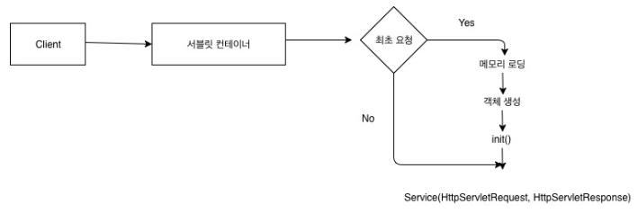
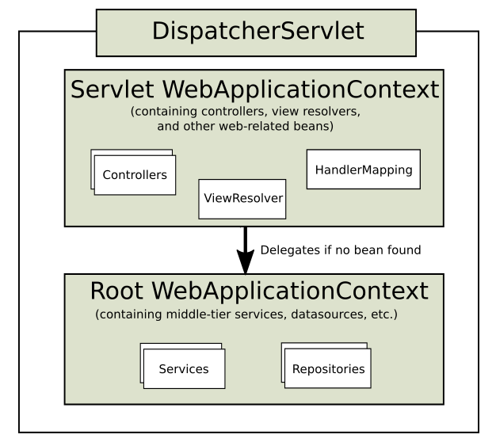

springboot 3.동작원리
springboot 개념정리
- springboot 1.스프링 이란?
- springboot 2.JPA 란?
- springboot 3.동작원리
- springboot 4.Git 세팅
- springboot 5.HTTP1.1 체험하기
- springboot 6.yaml 설정
- springboot 7.Lombok 세팅
- springboot 8.테이블 생성하기
- springboot 9.Json 데이터로 통신하기
해당 게시물은 이 강의를 보고 제작하게되었습니다.
※ 동작원리
1. 내장 톰캣을 가진다.
- 톰캣을 따로 설치할 필요가 없이 내장되어있다.
Socket 이란?
- 네트워크 상에서 데이터를 보내거나 받기 위한 실제적인 창구 역할을 하는 것입니다.
- 프로세스가 데이터를 보내거나 받기 위해서는 반드시 소켓을 통해서 해야합니다.
- 소켓은 프로토콜, ip 주소, port 번호로 정의됩니다.
Socket 통신
- 한 port에 클라이언트 1개로 제한됩니다.
- 처음 통신시 Main 쓰레드인 소켓이 연결 되면 자식 쓰레드 소켓으로 연결하고 메인 쓰레드와의 통신은 끊습니다.
- 쓰레드로 작동되기 때문에 동시에 여러 클라이언트와 통신하는 것 처럼 보입니다.
- 계속 연결 되어있어 클라이언트 식별이 가능합니다.
- 부하가 많이 걸려서 느려질 수 가 있습니다.
HTTP (Hypertext Transfer Protocol) 란
- 웹서버와 클라이언트가 사이에서 문자(문서)를 주고받기 위해 사용되는 프토토콜입니다.
HTTP 통신
- Stateless 방식을 사용하여 계속 연결되어 있지는 않고 필요한 정보만 주고받고 연결을 끊습니다.
- 계속 연결이 되어있는 형식이 아니기 때문에 부하가 많지 않고 하나의 포트로만 통신이 가능합니다.
- 정보가 필요할 때만 새로 연결이 되기 때문에 클라이언트 식별이 불가능합니다.
- 소켓통신을 기반으로 만들어졌습니다.
- static한 자원을 제공하여 정보가 실시간으로 반영되지 않습니다.
웹서버
- 가지고 있는 파일/문서를 공유할 수 있게 해주는 서버입니다.
- 클라이언트가 서버에 문서를 요청(Request)하면 서버는 해당 문서를 응답(Response)합니다.
- 서버는 클라이언트의 IP를 몰라도 됩니다.
- 자바를 이해하지 못합니다.
- 이해하지 못한 Jsp 코드는 톰캣에게 보냅니다.
톰캣
- 웹브라우저에서 읽을수 없는 jsp 코드를 컴파일하고 HTML로 번역해서 웹서버 돌려주는 역할을 합니다.
- 서블릿 컨테이너가 있습니다.
2. 서블릿 컨테이너

- 스프링은 URL(자원) 접근을 막고 URI(식별자)를 통해서만 자원에 접근이 가능합니다.
- 모든 Request는 톰캣을 거친 후 Response 됩니다.
- Request가 들어오면 스레드가 생성되고 스레드에 대한 서블릿 객체가 생성됩니다.
- 스레드를 정해진 개수만큼 생성하고 그 후에는 기존 스레드를 재사용 합니다.
- 스레드를 재사용 함으로써 삭제와, 생성 과정을 안하기에 처리 시간이 단축됩니다.
- 스레드를 사용 함으로써 여러개의 Reqeust를 동시에 처리할 수 있습니다.
URL 이란?
-URL은 흔히 웹 주소라고도 하며, 컴퓨터 네트워크 상에서 리소스가 어디 있는지 알려주기 위한 규약입니다.
- ex) https://kilhyeonjun.github.io/a.png
URI 란?
- URI는 특정 리소스를 식별하는 통합 자원 식별자(Uniform Resource Identifier)를 의미합니다.
- ex) https://kilhyeonjun.github.io/picture/a
3. web.xml
ServletContext의 초기 파라미터
- 초기 파라미터는 한 번 정해지면 어디서든지 사용 가능한 값입니다.
Session의 유효시간 설정
Session 이란?
- 인증을 통해서 접속하는 방법입니다.
- 유효시간을 정하게 되면 각 Session을 해당 시간동안만 접속이 가능합니다.
- 유호시간을 늘리고 싶으면 재인증을 통해 갱신하면 됩니다.
Servlet/JSP에 대한 정의
Servlet/JSP 매핑
- 요청한 자원, 로케이션, 식별자가 어디있는지 알려주고 찾아갈 수 있게 도와주는 것입니다.
- 모든 클래스 매핑을 적용하기에는 코드가 너무 복잡하므로 FrontController 패턴을 이용합니다.
Mime Type 매핑
- Mime Type을 식별 한 후 데이터가 필요한 곳으로 매핑하는 것입니다.
- HTTP get방식은 데이터를 가지고 오지 않습니다.
- 데이터를 가지고 가기 위해 요청되었기 때문입니다.
MimeType 이란?
- 서버에 접속할때 가지고 오는 데이터의 타입입니다.
Welcome File list
- 요청의 목적이 불명확실할 때에 보내는 곳입니다.
Error Pages 처리
- 에러가 난 페이지를 따로 처리하는 것입니다.
리스너/필터 설정
필터 란?
- 요청을 거르거나 가지고 있는 데이터를 필터링 하는 것입니다.
리스너 란?
- 주어진 행동에 대해서 그 행동이 일어나는지 감시하는 것입니다.
보안
- 보안 기능을 제공합니다.
4. FrontController 패턴
- web.xml에 다 정의하기가 너무 힘들기 때문에 최초 앞단에서 request 요청을 받아서 필요한 클래스에 넘겨줍니다.
- 이때 새로운 요청이 생기기 때문에 request와 response가 새롭게 생성 될 수 있습니다.
- 그래서 아래의 RequestDispatcher가 필요합니다
- request와 response는 하나씩만 있을 수 있습니다.
- 하지만 FrontController에 설정한 데이터가 나타나면 해당 데이터에 대해
새로 request 와 response가 생기는데, 최초의 request 와 response에
덮어씌워지므로 기존 request 와 response를 유지 할 수 있는 방법이
필요한데 그것이 RequestDispatcher 입니다.
- Spring은 외부에서 웹서버의 자원으로 직접적으로 접근하는것이 막혀있기 때문에 바로 자원에 접근하는 것이 아닌 톰캣으로 향하게 됩니다.
- 톰캣이 request와 response를 자동으로 나누어 객체로 만들어줍니다.
resquest 린?
- 서버에게 요청한 정보가 들어있는 객체
response 란?
- request를 토대로 서버에서 응답한 데이터를 담을 객체
5. RequestDispatcher
- 필요한 클래스 요청이 도달했을 때 FrontController에 도착한 request 와 response를 그대로 유지시켜줍니다.
- 페이지를 이동할 때 RequestDispatcher를 이용하면 이전 페이지에서의 데이터를 그대로 가져올 수 있습니다.
6. DisplatcherServlet
- FrontController 패턴 과 RequestDispatcher의 기능을 합니다.
- DispatcherServlet이 자동생성되어 질 때 수 많은 객체 생성(IoC)됩니다.
- 보통 필터들이고, 해당 필터들은 내가 직접 등록할 수도 있지만 기본적으로 필요한 필터들은 자동 등록 되어집니다.
7. 스프링 컨테이너
- DispatcherServlet에 의해 생성되어지는 수 많은 객체들은 ApplicationContext에서 관리됩니다. 이것을 IoC라고 합니다..
ApplicationContext
- IoC란 제어의 역전을 의미합니다.
- 개발자가 직접 new를 통해 객체를 생성하게 된다면 해당 객체를 가르키는 레퍼런스 변수를 관리하기 어렵습니다.
- 그래서 스프링이 직접 해당 객체를 관리합니다.
- 이때 우리는 주소를 몰라도 됩니다.
- 왜냐하면 필요할 때 DI하면 되기 때문입니다.
- DI를 의존성 주입이라고 합니다.
- 필요한 곳에서 ApplicationContext에 접근하여 필요한 객체를 가져올 수 있습니다.
- ApplicationContext는 싱글톤으로 관리되기 때문에 어디에서 접근하든 동일한 객체라는 것을 보장해줍니다.
ApplicationContext의 종류에는 두가지가 있는데 (root-applicationContext와 servlet-applicationContext) 입니다.
a. servlet-applicationContext
- servlet-applicationContext는 ViewResolver, Interceptor, MultipartResolver 객체를 생성하고 웹과 관련된 어노테이션 Controller, RestController를 스캔 합니다.
- 해당 파일은 DispatcherServlet에 의해 실행됩니다.
b. root-applicationContext
- root-applicationContext는 해당 어노테이션을 제외한 어노테이션 Service, Repository등을 스캔하고 DB관련 객체를 생성합니다. (스캔이란 : 메모리에 로딩한다는 뜻)
- 해당 파일은 ContextLoaderListener에 의해 실행됩니다.
- ContextLoaderListener를 실행해주는 녀석은 web.xml이기 때문에 root-applicationContext는 servlet-applicationContext보다 먼저 로드 됩니다.
- 당연히 servlet-applicationContext에서는 root-applicationContext가 로드한 객체를 참조할 수 있지만 그 반대는 불가능합니다.
- 생성 시점이 다르기 때문입니다.

Bean Factory
- 필요한 객체를 Bean Factory에 등록할 수 도 있습니다.
- 여기에 등록하면 초기에 메모리에 로드되지 않고 필요할 때 getBean()이라는 메소드를 통하여 호출하여 메모리에 로드할 수 있습니다.
- 이것 또한 IoC입니다.
- 그리고 필요할 때 DI하여 사용할 수 있습니다.
- ApplicationContext와 다른 점은 Bean Factory에 로드되는 객체들은 미리 로드되지 않고 필요할 때 호출하여 로드하기 때문에 lazy-loading이 된다는 점입니다.
8 요청 주소에 따른 적절한 컨트롤로 요청 (Handler Mapping)
- GET요청 ex) http://localhost:8080/post/1
- 해당 주소 요청이 오면 적절한 컨트롤러의 함수를 찾아서 실행합니다.
9 응답 (Response)
- html파일을 응답할지 Data를 응답할지 결정해야 하는데 html 파일을 응답하게 되면 ViewResolver가 관여하게 됩니다.
- 하지만 Data를 응답하게 되면 MessageConverter가 작동하게 되는데 메시지를 컨버팅할 때 기본전략은 json입니다.
- Data를 리턴할 때는 메소드에 @ResponseBody 어노테이션을 붙입니다.
- 그럼 리턴값을 File이 아닌 Data로 취급합니다.
- 그리고 리턴값이 객체이면 MessageConverter가 이 객체를 json으로 변환 후 리턴합니다.